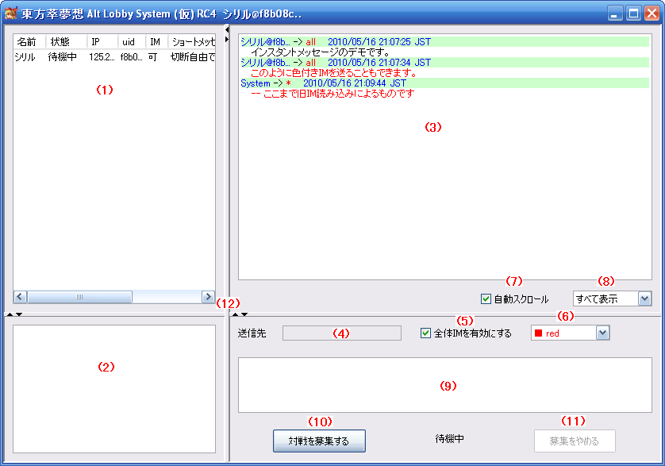

東方萃夢想 Alt Lobby System 東方萃夢想ロビーシステム(RC4) 操作説明 メインウィンドウ
はじめに
このドキュメントは、東方萃夢想 Alt Lobby Systemのテスト版の操作説明を簡略にまとめたものです。
アプリケーションと同様に本ドキュメントもテスト版であり、機能の説明やスクリーンショットなどは予告なく変更されることがあります。
メインウィンドウ

操作説明
- (1)接続中ユーザー一覧テーブル
- 現在サーバーに接続している全ユーザーが表示されます。
- このリストから、アイテム(ユーザー)を選択すると、下のテキストエリアに設定した募集文が表示されます。
- このリストには自分自身も含まれます。
- (2)募集文表示エリア
- 各ユーザーが設定した募集文が表示されます。
- (3)インスタントメッセージエリア
- 接続中のユーザーが送信したIMが表示されます。全体IMと自分宛のIMのほか、Systemメッセージもここに表示されます。
- (4)送信先
- 送信先指定IMのあて先ユーザー名です。このテキストエリアを直接変更することはできません。
- ユーザー指定IMを送信するには、ユーザーを選択し、右クリック、IMを送信を選択します。ユーザー名が表示されれば、ユーザー指定IM送信の準備はできています。
- (5)全体IMを有効にする
- チェックが入っている場合、IMは接続中の全ユーザーに向けて送信されます。送信先指定IMのユーザー名が入っていても、こちらが優先されます。
- メニューにて指定IMを送信する場合、チェックは自動的に外れます。
- (6)IMの色
- 送信するIMの色を選択します。黒や赤、青などさまざまな色の中から選択することができます。
- (7)自動スクロール
- IMを受け取った場合に、インスタントメッセージエリアのスクロールバーを一番下に移動させます。
- (8)IM表示フィルター
- ダウンロードしたインスタントメッセージをフィルターして表示できます。
- 全表示、全体IMのみ、自分宛IMのみの選択ができます。
- (9)IM入力エリア
- ここのテキストエリアに送信したいメッセージを入力し、設定したキー(デフォルトではENTER)を押すことでインスタントメッセージが送信されます。
- (10)対戦を募集する
- Casterを-wオプションをつけてバックグラウンドで起動し、対戦を募集します。
- このボタンを押すと、自分の状態は対戦募集中になります。
- このボタンを押してもすぐ待機中に戻ってしまう場合、Casterの起動に失敗していることが考えられます。
- (11)募集をやめる
- バックグラウンドで起動しているCasterを終了し、募集をやめます。
- 状態は、待機中に戻ります。
- (12)ディバイダ
- 縦横にスライドさせることで、表示比率を変えることができます。ただし、一部のコントロールには最小サイズが指定されているため、スライド量には限度があります。
- 三角を押すと、端まで移動し、完全に隠れます。
リンク
- 接続ウィンドウ
- http://th075altlobby.dip.jp/usage/connect_win.html
- メインウィンドウ
- http://th075altlobby.dip.jp/usage/main_win.html
- 設定ウィンドウ クライアント設定
- http://th075altlobby.dip.jp/usage/setting_win_client.html
- 設定ウィンドウ Caster設定
- http://th075altlobby.dip.jp/usage/setting_win_caster.html
- 設定ウィンドウ IM(1)設定
- http://th075altlobby.dip.jp/usage/setting_win_im1.html
- 設定ウィンドウ IM(2)設定
- http://th075altlobby.dip.jp/usage/setting_win_im2.html
- 東方萃夢想 Alt Lobby System 東方萃夢想ロビーシステム 操作説明
- http://th075altlobby.dip.jp/usage/
最終更新 : 2010-05-16 21:55
作成日時 : 2010-02-19 1:00
サイトトップ : http://th075altlobby.dip.jp/